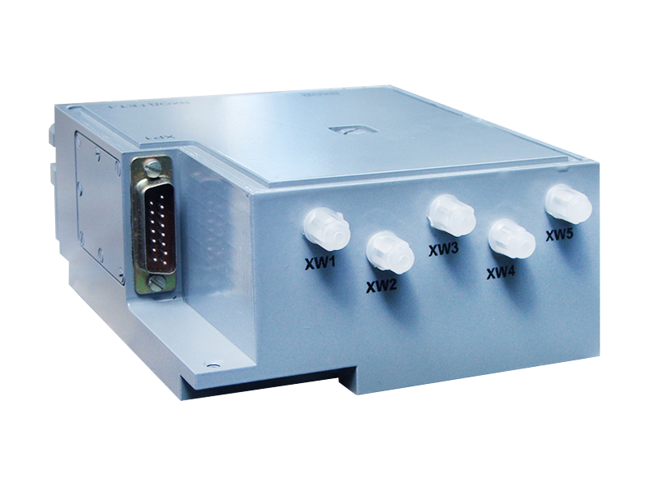
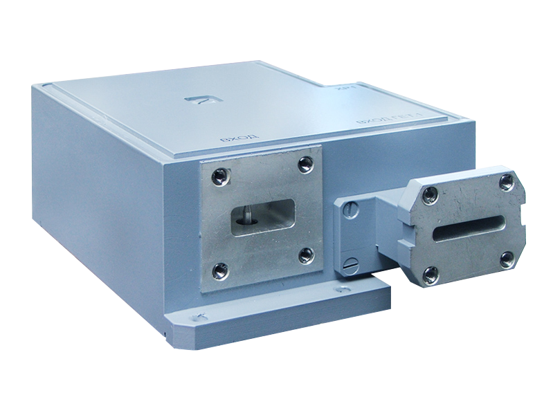

ААЭД.434854.004
Предназначен для применения в приемных блоках современных метео-навигационных радиолокаторов и обеспечивает:
Радиолокационный приёмный модуль имеет входной аттенюатор для регулировки уровня входного сигнала и защиты малошумящего усилителя на время зондирующего импульса, с малым временем восстановления.
 
| рабочий диапазон частот | X |
| коэффициент шума, дБ | 3.5 |
| верхняя граница линейности амплитудной характеристики, дБм | -35 |
| коэффициент стоячей волны по входу | 2.5 |
| избирательность по зеркальным каналам приема, дБ | 40 |
| полоса пропускания по fпч2=28 МГц по уровню -3 дБ, МГц | 5 |
| полоса пропускания по fпч2=84 МГц по уровню -3 дБ, МГц | 30 |
| глубина дискретной регулировки коэффициента передачи в широкополосном режиме, дБ | 15 |
| неидентичность фазочастотных характеристик между выходами квадратурных каналов(широкополосный режим) | (90±5)o |
| максимальное выходное напряжение по выходам fпч2=84 МГц, В | ±1 |